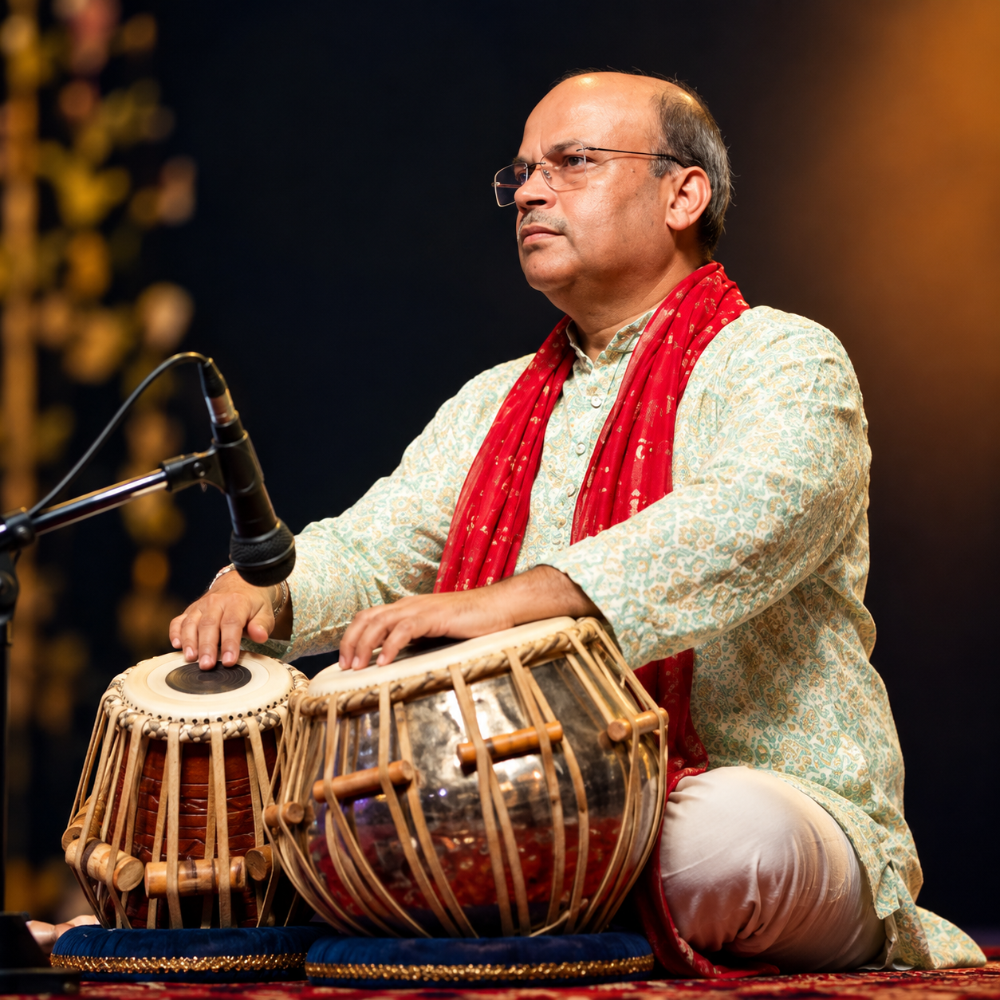

Bhajan Jamming
Interactive devotional music combining singing, Tabla, rhythm and participation.
Explore Bhajan Jamming →MUSIC • RHYTHM • BHAKTI
Tabla Player • Bhajan Singer • Performer
Creating musical experiences through Tabla, Bhajan, rhythm and participation — from devotional gatherings and Bhajan Jamming to live music, classical Tabla Sangat and Ghazal accompaniment.
Watch My Performances →
Music • Participation • Connection
For Anand, music is more than a performance. Tabla, singing, bhajans and rhythm come together to create a shared experience — one where listeners can connect, sing along and feel part of the music.
His musical world moves naturally between devotional gatherings, Bhajan Jamming, classical accompaniment, Ghazal Tabla and live community performances.
Read My Musical Journey →02 / MY MUSICAL WORLD
Explore the musical experiences that shape Rythm With Anand.
Interactive devotional music combining singing, Tabla, rhythm and participation.
Explore Bhajan Jamming →Tabla performance and rhythmic accompaniment across devotional, classical and live settings.
Explore Tabla →Devotional music for satsang, spiritual gatherings and religious occasions.
Explore Services →Live musical performances for cultural, community, private and special occasions.
View Performance Options →03 / FEATURED EXPERIENCE
Where Devotion Meets Rhythm
Bhajan Jamming brings singers, musicians and listeners together in an interactive musical experience — combining devotional singing, Tabla, rhythm and participation.
THE PHILOSOPHY
Music becomes an experience when rhythm, voice and devotion come together.
04 / THE RHYTHM OF TABLA
Tabla is at the heart of Anand's musical expression — supporting melody, creating movement and adding rhythmic character to every setting.
05 / LIVE PERFORMANCES
06 / WATCH ME PERFORM
07 / MOMENTS IN MUSIC
08 / OCCASIONS
Musical experiences for devotional, cultural and community gatherings.
09 / LET'S CONNECT
Whether you are planning a Bhajan Jamming session, devotional gathering, cultural program or live musical event, let's connect and explore the possibilities.